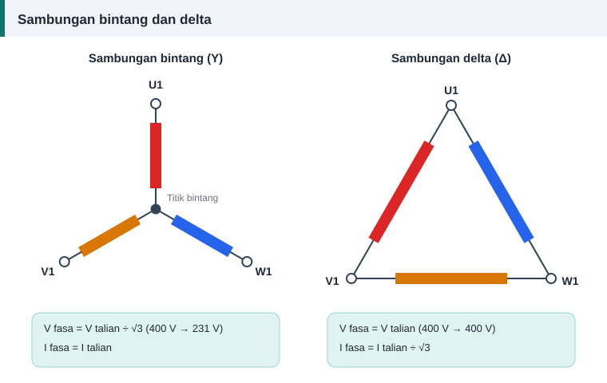

Asas motor
Sambungan Bintang dan Delta: Voltan, Arus dan Kesan pada Belitan
Tiga belitan fasa di dalam stator mempunyai enam hujung. Cara enam hujung itu dicantumkan menentukan voltan yang diterima oleh setiap fasa, dan itulah yang membezakan sambungan bintang dengan delta.


Dua cara menyambung tiga fasa
Dalam sambungan bintang (Y), satu hujung setiap fasa dicantum pada satu titik yang dipanggil titik bintang. Tiga hujung yang lain pergi ke bekalan.
Dalam sambungan delta (Δ), hujung satu fasa disambung ke permulaan fasa seterusnya sehingga membentuk gelung tertutup. Bekalan disambung pada tiga bucu gelung itu.
Hubungan voltan dan arus
| Kuantiti | Bintang (Y) | Delta (Δ) |
|---|---|---|
| Voltan fasa | Voltan talian ÷ √3 | Sama dengan voltan talian |
| Arus fasa | Sama dengan arus talian | Arus talian ÷ √3 |
| Pada bekalan 400 V | 231 V setiap fasa | 400 V setiap fasa |
| Pada arus talian 8.3 A | 8.3 A setiap fasa | 4.8 A setiap fasa |
Kesan pada pengiraan belitan
Formula lilitan menggunakan voltan fasa. Bagi kuasa yang sama pada bekalan 400 V, belitan yang direka untuk delta memerlukan √3 kali lebih banyak lilitan setiap fasa berbanding reka bentuk bintang, dengan dawai yang luasnya dibahagi √3. Jumlah kuprum hampir sama.
Sebab itulah sambungan mesti dicatat sebelum belitan lama ditanggalkan. Bilangan lilitan yang betul untuk bintang akan menyebabkan motor lemah jika disambung delta dengan andaian yang salah, dan sebaliknya.
Papan terminal enam hujung
Hujung belitan dilabel U1–U2, V1–V2 dan W1–W2. Pada papan terminal piawai, baris atas disusun U1, V1, W1 dan baris bawah W2, U2, V2. Susunan berselang itu membolehkan tiga kepingan penyambung menegak menghasilkan delta, iaitu U1–W2, V1–U2 dan W1–V2. Tiga terminal baris bawah yang dirapatkan dengan kepingan mendatar pula menghasilkan bintang.
Pemula bintang-delta
Motor yang berjalan dalam delta boleh dimulakan dalam bintang untuk mengurangkan arus mula. Dalam bintang, voltan setiap fasa turun kepada 58%, manakala arus talian dan tork mula turun kepada kira-kira satu pertiga. Kaedah ini hanya sesuai untuk motor yang voltan deltanya sama dengan voltan bekalan, contohnya Δ 400 V.
Soalan lazim
Motor saya bertanda 230/400 V. Bolehkah disambung delta pada bekalan 400 V?
Tidak. Setiap fasa akan menerima 400 V sedangkan ia direka untuk 230 V. Teras menjadi tepu dan belitan terbakar dalam masa singkat. Gunakan sambungan bintang.
Motor hanya mempunyai tiga wayar keluar. Bagaimana mengetahui sambungannya?
Sambungan telah dibuat di dalam, pada hujung belitan. Cari tiga hujung yang dicantum bersama, yang menandakan bintang, atau tiga cantuman dua hujung, yang menandakan delta. Catat sebelum belitan ditanggalkan.
Adakah sambungan mengubah arah pusingan?
Tidak. Arah pusingan ditentukan oleh urutan fasa bekalan. Tukar mana-mana dua wayar bekalan untuk menterbalikkan arah.
Bolehkah menukar voltan motor hanya dengan menukar sambungan?
Boleh, jika nisbah voltan ialah √3. Kes lain memerlukan lilitan semula, seperti dalam menukar voltan motor.
Rujukan dan bacaan lanjut
Artikel berkaitan
Cara Membaca Plat Nama Motor Elektrik
Plat nama memberi semua data yang diperlukan sebelum melilit semula: voltan, arus, laju, sambungan dan kelas penebat. Ketahui maksud setiap ruangan satu per satu.
Menukar Voltan Motor: Kira Lilitan dan Saiz Dawai Baharu
Sebelum melilit semula untuk voltan lain, semak sama ada sambungan semula sudah memadai. Jika tidak, dua nisbah mudah memberi bilangan lilitan dan saiz dawai baharu.
Formula Lilitan Per Fasa: E = 4.44 f Φ N kw Dijelaskan
Satu persamaan menghubungkan voltan, frekuensi, fluks dan bilangan lilitan. Fahami asal-usul angka 4.44 dan cara menggunakannya untuk mengira lilitan per fasa motor.